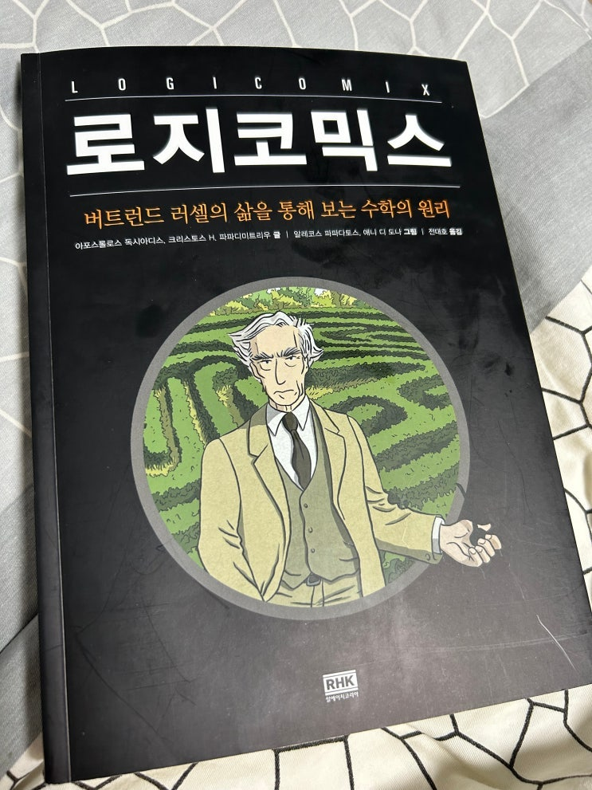
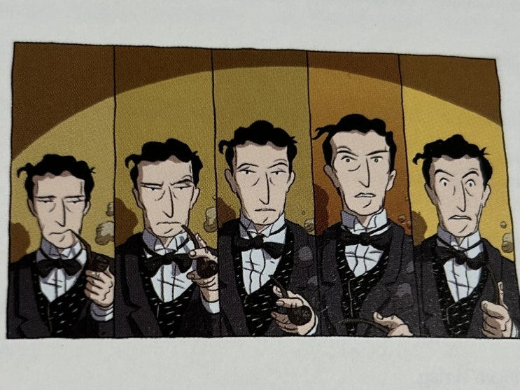
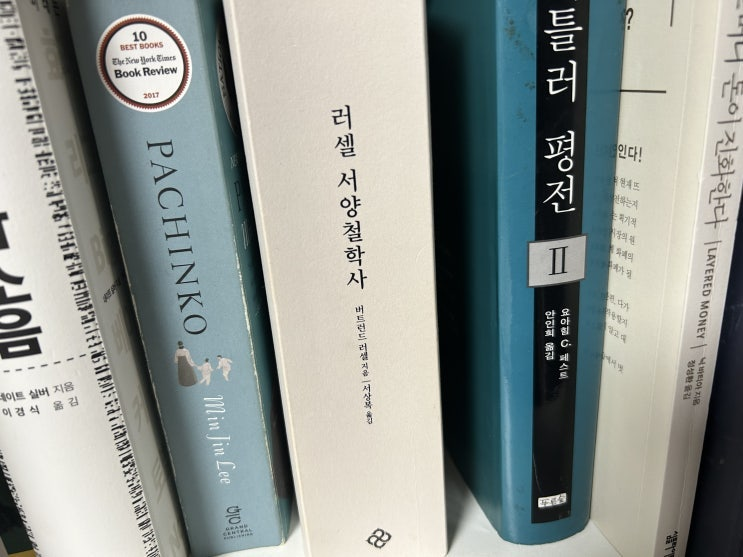

오늘은 밖에 비도 오고 시간도 좀 남아서 집에서 지난번 사두고 못 읽었던 만화책 (비주얼노블)인 '로지코믹스'를 읽었습
니다.

로지코믹스는 버트런드 러셀 이라는 유명한 지식인의 (논리학자/수학자/역사학자 등 이었음) 삶을 그린 만화로 표지에서
는 수학의 원리에 대해서 나와있다고 하지만 실제로 만화는 그 부분에 대해서 다루지 않습니다.
수학 이야기라기 보다는 당대 수학자들, 논리학자들과 사회에 대한 이야기를 러셀의 삶과 엮어서 재미있게 보여주는 드라
마에 가깝습니다. 영화 오펜하이머와 비슷한 구성이라고 보면 좋을 듯 합니다. 오펜하이머 영화가 핵폭탄 만드는 법에 대
한 이야기가 아닌 것 처럼, 이 로지코믹스 책도 수학에 대한 이야기는 아닙니다.
이 책은 러셀의 생애에 대해서 세상에 대한 호기심, 진리 추구에 대한 집념과 좌절, 천재(비트겐슈타인)를 제자로 둔 스승
의 제자에 대한 놀라움과 그 제자와의 갈등과 결별, 정신병에 대한 두려움과 극복, 인생의 말로에 들어서서 가지게 된 새로
운 성찰 등 여러가지 국면을 멋진 스토리와 그림으로 잘 뽑아내고 있는 드라마로 오펜하이머를 재미있게 보셨던 분이라면
한 번쯤 보실만 한 것 같습니다.
코인 투자 실패로 상심에 잠겨있는 오펜하이머 교수
이 책에서 좋았던 점은 만화적인 연출인데, 저는 다음의 장면이 제일 좋았습니다. 러셀이 뭔가를 그냥 지나갔다가 다시 생
각하면서 깨달음을 얻는 장면입니다. 저자도 이게 좋았다고 생각했는지 책 맨 마지막에 이 컷을 다시 넣어두었네요.

응...응?.. 응??... 응!!!... 엌
다 읽는데 3시간 정도만 걸릴 정도로 가벼운 내용이니 심심하신 분들은 영화 한편 보신다고 생각하고 보셔도 좋겠습니다.
그나저나 서양철학사는 언제 다읽냐... 두껍다...

책이 글씨도 작은데 1000페이지야...-_-
끝.